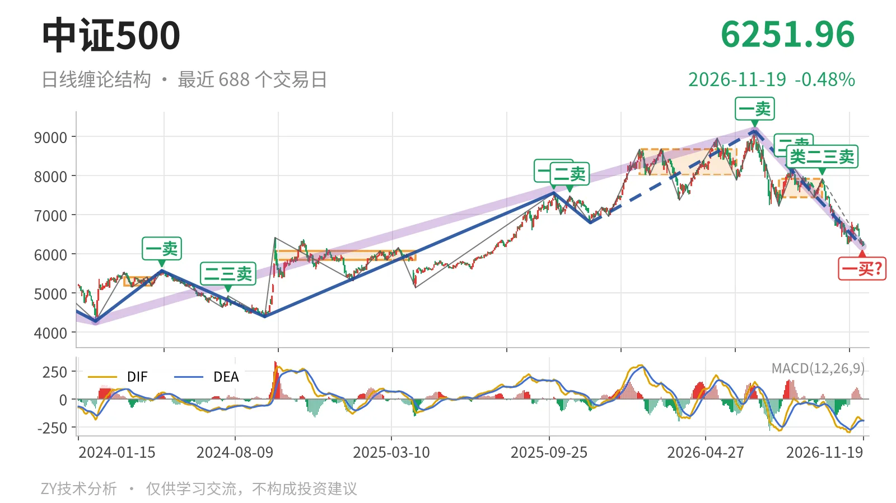
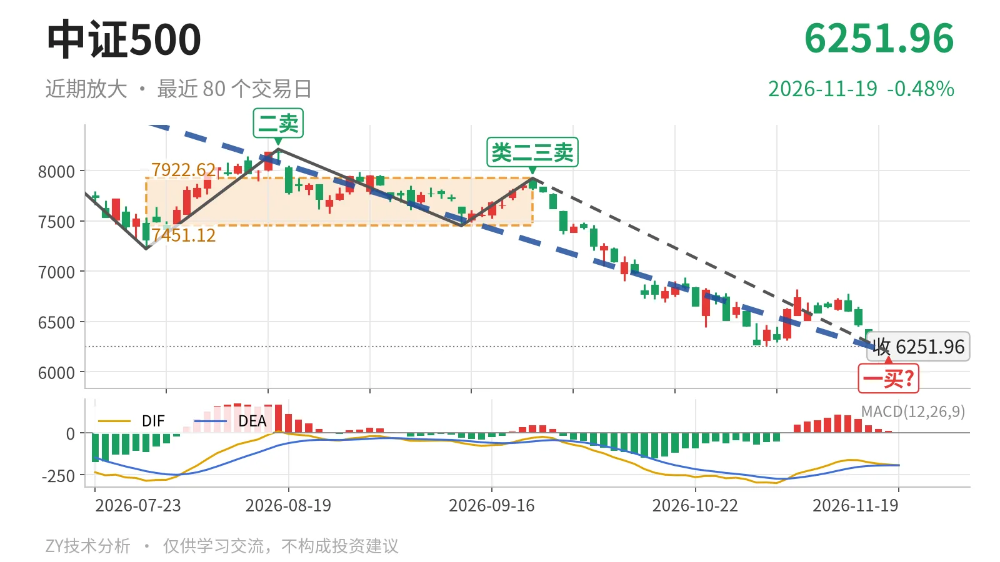

中证500｜暂定一买6195，反抽看7451点附近

最近日线中枢 7451.12—7922.62点，收盘位于中枢之下
一句话：日线下跌笔新低不新弱，暂定一买待确认，反抽看7451点附近。
📉 走势结构：日线处下跌段，更大级别仍在中枢内
更大级别上，2022年4月27日至2023年8月4日的线段中枢5594.30—6263.16点仍然有效，最新价回到其中，属于大级别中枢震荡。日线线段层面，2026年7月1日9147.56点以来的下跌段跌至11月18日6194.85点，跌约32.3%，这段回落没有结束。日线线段内部，9月22日至11月18日下跌笔还在延续，11月18日6194.85点形成日线笔级别暂定一买。11月19日最低6200.92点尚未创阶段新低，但一天K线看不出笔的转折。

🧭 中枢与位置：最新价在最近日线中枢下方
最近两个日线笔中枢分别是1月26日至6月8日的8014.66—8671.35点、7月30日至9月22日的7451.12—7922.62点，中枢出现下移。最新收盘6251.96点低于最近中枢下沿7451.12点约16.1%，属于中枢下方运行。线段级别中枢上沿6263.16点尚未被有效跌破，大级别结构没有破位，但小级别已经明显离开上方日线中枢。
📌 买卖点：卖点一个比一个低，一买暂定
日线笔级别上，7月1日一卖9147.56点、8月18日二卖8211.31点、9月22日类二三卖7922.62点，一个比一个低，反抽仍受压制。11月18日6194.85点出现日线笔级别一买，但所在9月22日至11月18日下跌笔没有结束，该一买会随这一笔延续而变化，属于暂定的一买。线段级别上，2025年11月24日三买6797.50点之后冲高至2026年7月1日9147.56点，随后回落又回到线段中枢上沿附近。

⚡ 背驰：9月22日这笔新低不新弱
同向对比两笔下跌：7月1日至7月30日那笔绿柱面积2687，DIF低点-285.2；9月22日至11月18日这笔价格创6194.85点新低，绿柱面积缩至1835，属于新低不新弱。但DIF低点下探到-298.6，较前低更深，面积背驰缺少DIF同步配合，且这笔还在延续，背驰只是暂定观察。最新MACD柱0.8，DIF在零轴下方，回抽零轴的动作刚开始。
🔍 关键位置观察：回不到7451点之上仍属三卖压力
反抽若回不到7451点上方，结构上就仍是对7月30日至9月22日中枢的第三类卖点压力，11月18日暂定一买只对应更小级别。重新站上7451点并回到中枢内，2026年7月1日以来的下跌更可能转为中枢扩展，而非单边下行。再往上，压力看7923点附近。当前日线级别仍处下跌段中，最新价在最近中枢下方，卖点一个比一个低，仅凭暂定一买和面积背驰还不足以改变下跌结构，日线级别暂未转强。
⚠️ 本文为基于公开行情数据的缠论技术结构记录，由程序自动计算并生成，仅供学习交流，不构成任何投资建议。市场有风险，投资需谨慎。